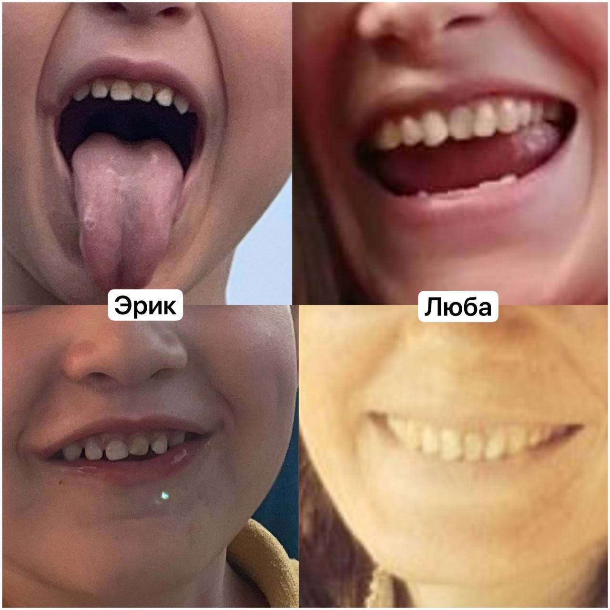

Закрой свой рот! Ты слишком ...

«Ты слишком …». Три слова, благодаря которым появилась Психостоматология №1
автор Антон Казаков
Прежде чем вы начнете читать...
есть вероятность, что примерно на середине этой статьи вам захочется её закрыть. Я попробую заранее предсказать, почему это произойдёт и как будет называться то, что вы почувствуете. Проверим, получится ли)
Эта статья для тех, кто считает, что у него «было нормальное детство», «любящая семья», «никто не бил» — и при этом во рту уже побывал не один стоматолог. Мы в Психостоматологии №1 годами искали, что именно стоит за каждым разрушенным зубом. Родительское отчуждение объясняло много. Но под ним лежит механизм глубже и тише. Он называется эпистемическое насилие. Предлагаю сегодня увидеть, как этот механизм звучит в обычной среднестатистической семье.
Что это такое — по-бытовому
Эпистемическое насилие — это когда у человека отбирают право быть свидетелем собственной жизни, быть собой, видеть своими глазами и иметь свое мнение.
Вот, через какие фразы оно реализуется:
- «Я такого не говорил» — через минуту после того, как сказал;
- «Тебе показалось»;
- «Не выдумывай»;
- «Он тебя любит, он просто старается для тебя» — в ответ на «мне больно»;
- «Ничего страшного, не плачь»;
- «Не будь драматичной»;
- «Ты слишком чувствительный»;
- «Все так живут, это нормально».
Слышали подобное? Я слышал. Запомните эти слова — они нам ещё понадобятся позже, в разделе про когнитивный диссонанс.
Сам термин придумала Гаятри Спивак ещё в 1988-м — про то, как империя лишает колонизированные народы права голоса: за них решают, что они «на самом деле» думают и чувствуют. Потом выяснилось, что империя отлично помещается на одной кухне. Философ Миранда Фрикер назвала это эпистемической несправедливостью: тебя не считают источником знания. Кристи Дотсон разложила механизм на два акта. Первый — тебя глушат: твои показания просто не принимаются к рассмотрению, потому что ты ребёнок, мужчина/женщина, «истеричка», «фантазёр». Второй акт страшнее — ты глушишь себя сам: поняв, что твое мнение не примут, ты перестаёшь его выражать. Сначала другим. Потом — себе.
Ребёнок, которому десять тысяч раз сказали «тебе показалось», делает единственный логичный вывод: мои глаза и уши — неисправный прибор. Реальность нужно запрашивать у хозяина. Так выглядит прошивка, с которой человек потом выходит в жизнь: собственный опыт не считается доказательством, пока его не подтвердил кто-то сверху.
Что это значит.
В прошлой статье я описывал психологический портрет клиента стоматологии — человека, чье поведение определяется похвалой и осуждением, а не личными интересами. Так вот, “беззубыми” не всегда рождаются сразу, хотя и такое в нашей практике есть. “Беззубый” — это тот, кому в процессе воспитания запретили верить своим ощущениям.
Кому нужна чужая похвала как воздух? Тому, кому запретили радоваться самостоятельно.
Эпистемическое насилие — это не ещё один механизм рядом с отчуждением. Это цех, где насильники производят из своих детей заготовки для будущих кукловодов.
Почему эпистемическое насилие сложно заметить, но легко найти?
Обычно насилие ищут там, где его учили искать: крик, сарказм, ремень, хлопнувшая дверь. Не нашли ничего подобного — закрыли тему: «у нас такого не было».
Правильно, не было. Мы это тоже подтверждаем. Но эпистемическому насилию всё это не нужно. Ему не нужен даже повышенный голос — потому что это не тон, а позиция: «я решаю, что было, а чего не было. Я решаю, больно тебе или показалось. Я решаю, нужен тебе второй родитель или нет». Тихая, спокойная, непререкаемая должность директора чужой реальности.
Хуже того: чаще всего эта должность исполняется с нежностью. «Ну что ты, маленький, ничего страшного не случилось» — звучит как забота. Выглядит как любовь. Мама не орёт — мама гладит по голове, и этим же движением аннулирует твоё показание о боли. Вот почему у людей из самых вежливых, тёплых, интеллигентных семей рот выглядит как пристанище сатаны: насилие приходило в упаковке нежности, и предъявить нечего. Никто не бил, ничего не происходило.
Мы, “беззубые”, очень хорошо выучили одно простое правило: скажешь «да, наверное, показалось» — получишь нежность. Начнёшь настаивать на своём — получишь холод. На выходе — мы стали взрослыми, которые носят своё восприятие на утверждение другим людям. Кнопки настроены; кукловоду из «Инструкции по эксплуатации беззубых» останется их только найти. А улыбка человека, если что, - первое место, где эти кнопки заметнее всего.
Исследователи насилия (Клаудия Бруннер) формулируют жёстче: эпистемическое насилие — не одна из форм насилия в ряду прочих. Это условие возможности всех остальных: оно заранее делает любое насилие незаметным, «нормальным», «естественным порядком вещей». Сначала у свидетеля насилия над собой забирают право свидетельствовать — потом с ним можно делать что угодно, показаний не будет. У Спивак для этого есть отдельный термин — «санкционированное неведение»: узаконенное незнание. В семейном исполнении вы его слышали тысячу раз: «мы не будем это обсуждать», «зачем ворошить прошлое», «не выноси сор из избы».
Ключевой вывод: эпистемическое насилие невидимо, потому что живет не столько в крике, сколько работает через заботу. Самая надёжная тюрьма — та, которую охраняет любящий человек.
Почему сепарация так и не случилась
Теперь про слово, которое вы наверняка слышали от психологов: сепарация. У неё четыре уровня (Хоффман), и по ним хорошо видно, куда именно бьёт эпистемическое насилие.
Функциональная сепарация — жить отдельно, зарабатывать, обслуживать свою жизнь самому. Эмоциональная сепарация — принимать решения без сверки с родительским одобрением. Ценностная — иметь собственные ценности и картину мира, отличные от родительских, и не платить за это виной.
Конфликтная — выдержать открытое несогласие с родителями и не развалиться от тревоги и стыда.
Конфликтная — выдержать открытое несогласие с родителями и не развалиться от тревоги и стыда.
Большинство закрывает первый уровень и считает вопрос решённым: переехал, зарабатываю, сепарировался. Нет. Сепарация измеряется не километрами.
Ценностная сепарация требует права на собственную карту реальности — а её конфисковали ещё тогда, вместе с «тебе показалось». Конфликтная сепарация требует веры, что твоё слово имеет вес в споре — а его объявили «драматизированием» до того, как ты научился спорить. Поэтому взрослый человек может жить на другом континенте, руководить компанией — и по-прежнему запрашивать реальность у мамы: по телефону, или молча, внутри, у её голоса в своей голове. Тело уехало. Свидетель остался под арестом.
Ключевой вывод: сепарация — это не отъезд. Это возврат себе права свидетельствовать о собственной жизни без утверждения сверху. Пока право не возвращено, все четыре уровня — декорация.
Главная причина, по которой захочется закрыть и обесценить данную статью
Мы дошли до обещанного места. Теперь следи за руками.
У каждого человека с проблемами по зубам в голове находится несущая иллюзия: «меня любили, детство было нормальное, у меня все хорошо, но даже если и было, то оно в прошлом». На этой иллюзии держится многое — отношения с родителями, наша биография, наша версия себя. Но эта статья только что занесла над этой иллюзией кувалду: «человек, которого ты любил, забрал у тебя право на улыбку».
У “беззубых” эти конструкции не могут помещаться в одной голове одновременно. Психолог Леон Фестингер назвал это состояние когнитивным диссонансом, и у мозга есть штатная процедура на такой случай: не перестраивать здание, а расстрелять почтальона, который принёс плохую новость.
Что если внутри твоей головы уже готовится мой расстрел? Проверь, какая из пуль уже заряжена в твой пулемет любви:
- «Автор сгущает, это натягивание совы на глобус»;
- «Ну говорили "не выдумывай" — и что, всем говорили, выросли же нормальными»;
- «Это не про меня, у меня зубы от генетики / сахара / плохого стоматолога»;
- «Мама делала, что могла, нельзя её обвинять» — хотя статья не обвиняет маму, статья про механизм.
Если что-то подобное уже есть у тебя в голове, то еще раз обрати внимание на эти четыре фразы. «Не выдумывай». «Ничего страшного». «Тебе показалось». «Все так живут». Знакомо? Это те же самые фразы из начала статьи — слово в слово. Только теперь их произносит не мама. Их произносишь ты — себе.
Вот что такое завершённое эпистемическое насилие: насильник больше не нужен. Прошивка работает автономно. Взрослый человек сам глушит все, что может принести ему пользу, сам называет свою боль преувеличением, сам защищает версию того, кто эту версию когда-то навязал. Диссонанс — это не сбой. Это охранник, которого поставили у твоей двери. Знаешь, как он тебя охраняет? Болью в зубе.
Последний свидетель
И вот здесь Психостоматология №1 бьёт туда, куда не достаёт ни один разговорный метод.
Словесные показания можно заглушить. Память можно переписать — «такого не было». Эмоции можно обесценить — «ты преувеличиваешь». За сорок лет самоцензуры можно надёжно забыть, что именно мне запретили знать.
Но в теле всегда остаются свидетели, которые палят всю систему эпистемического насилия над правом детей быть счастливыми. Это зубы. Они не дают словесных показаний — поэтому их нельзя переспорить. Они и не спорят — поэтому им нельзя сказать «такого не было». Они просто искривляются и разрушаются ровно там, где лежат запрещенное знание и запрещенное поведение. И мы это научились очень точно диагностировать еще в 2024 году.
Именно поэтому диагностика по зубам обходит защиты, о которые разбиваются прямые вопросы: мы не спрашиваем о родителях или отношениях — у вас с ними всегда все хорошо. Мы спрашиваем зубы. Зубы громче слов.
Проверка в обе стороны
Эпистемическое насилие не заканчивается на одном человеке. Оно постоянно передается дальше. Предлагаю небольшую проверку
Это делали с вами, если:
— после принятого решения вы первым делом идёте собирать мнения: «а правильно ли я сделал?»;
— на вопрос «чего ты хочешь?» внутри пусто — есть только «надо» и «нельзя»;
— сказать «нет» можно только с приложенным объяснением на три абзаца;
— хорошая новость не считается случившейся, пока вы её кому-то не показали;
— всё в жизни «правильно», а ощущение — что жизнь не ваша.
Вы передаёте это дальше, если:
— уже говорите своему ребёнку или партнёру «тебе показалось»;
— сообщаете ребёнку, что он чувствует: «каша вкусная», «ты не хочешь этого, ты просто ...», «терпи казак, атаманом будешь»;
— редактируете чужую радость: «чему тут радоваться», «не радуйся раньше времени», «сглазишь»;
— закрываете спор своей иерархией, а не аргументом: «я лучше знаю», «вырастешь — поймёшь»;
— на «мне больно» отвечаете «не плачь, ничего страшного» — вместо «покажи, где»;
— единолично решаете, о чём в семье «мы не будем говорить»;
— выдаёте людям удостоверения: «настоящий мужчина так не поступает», «нормальная женщина такого не хочет», «приличные люди так не живут»;
— запрещаете быть: «нельзя быть таким слабым», «нельзя быть злой», «нельзя быть эгоистом»;
— закрываете спор статусом истины: «это очевидно», «все знают», «так правильно» — три способа сказать «я решаю, что реально», не приводя ни одного аргумента.
— объясняете окружающим, что другой человек «на самом деле» имел в виду.
Первый список делает вас удобным.
Второй — делает удобным вашего ребенка.
Дальше ребенок идет и делает то же самое.
А потом у него появляются дети и он им передает то же самое.
Все это прекрасно можно увидеть по зубам родителей и детей.
Это делали с вами, если:
— после принятого решения вы первым делом идёте собирать мнения: «а правильно ли я сделал?»;
— на вопрос «чего ты хочешь?» внутри пусто — есть только «надо» и «нельзя»;
— сказать «нет» можно только с приложенным объяснением на три абзаца;
— хорошая новость не считается случившейся, пока вы её кому-то не показали;
— всё в жизни «правильно», а ощущение — что жизнь не ваша.
Вы передаёте это дальше, если:
— уже говорите своему ребёнку или партнёру «тебе показалось»;
— сообщаете ребёнку, что он чувствует: «каша вкусная», «ты не хочешь этого, ты просто ...», «терпи казак, атаманом будешь»;
— редактируете чужую радость: «чему тут радоваться», «не радуйся раньше времени», «сглазишь»;
— закрываете спор своей иерархией, а не аргументом: «я лучше знаю», «вырастешь — поймёшь»;
— на «мне больно» отвечаете «не плачь, ничего страшного» — вместо «покажи, где»;
— единолично решаете, о чём в семье «мы не будем говорить»;
— выдаёте людям удостоверения: «настоящий мужчина так не поступает», «нормальная женщина такого не хочет», «приличные люди так не живут»;
— запрещаете быть: «нельзя быть таким слабым», «нельзя быть злой», «нельзя быть эгоистом»;
— закрываете спор статусом истины: «это очевидно», «все знают», «так правильно» — три способа сказать «я решаю, что реально», не приводя ни одного аргумента.
— объясняете окружающим, что другой человек «на самом деле» имел в виду.
Первый список делает вас удобным.
Второй — делает удобным вашего ребенка.
Дальше ребенок идет и делает то же самое.
А потом у него появляются дети и он им передает то же самое.
Все это прекрасно можно увидеть по зубам родителей и детей.
Тест на одну секунду
Кстати, вспомните последний раз, когда вы делились радостью с родителем, чьё мнение для вас важно. Это могла быть новость, победа, покупка, любовь. Вопрос:
если вашу радость не поддержали — вы перестали улыбаться?
Если мнение значимого человека на вашу улыбку не повлияло — поздравляю: у вас здоровая ценностная и эмоциональная сепарация. По нашим диагностикам такие люди — редкость, и рты у них выглядят иначе.
Если радость без чужого «молодец» гаснет за минуту; если вы заранее сортируете, кому о ней можно рассказать, а кому лучше не надо; если после родительского «а чего тут особенного» победа перестаёт быть победой — вердикты о вашей жизни по-прежнему выносятся снаружи. И кто выносит вердикт — тот, кто гасит, или тот, кто горячо хвалит, — не имеет значения: ваше мнение не самостоятельно. Радость, которой нужно подтверждение, — не наша радость. Улыбка, которой нужно разрешение, — не наша улыбка.
Большинство из нас в последний раз радовались без разрешения, когда эти самые зубы ещё только прорезались. Потом стандартная процедура эпистемического насилия и все - деструктивные стратегии скопированы и переданы дальше.
На фото — зубы матери и сына из нашей диагностики. У ребёнка разрушается тот же зуб, что был разрушен у матери, зуб №21: прошивка отношения к мужчинам передана через три поколения. Деда в этой семье вычеркнули, отец умер рано, сыновья растут с ограниченным контактом с отцами. Никто никого не бил. Просто в каждом поколении находился директор чужой реальности.
Зубы всегда будут отражать то насилие, которое над детьми совершили взрослые. Это будет передаваться из поколения в поколение до тех пор, пока будет считаться нормой. Психостоматология №1 эту норму будет менять.
Приходите на бесплатную психостоматологическую диагностику — узнаете про свои отношения то, чего вам знать не положено. А выращивать обратно право на собственную радость приходите на тренировки: там можно говорить неудобное, слышать неудобное — и проверять, что от этого никто не умирает, а улыбка растёт.
Напоследок.
Когда эта статья разойдётся по чатам и соцсетям, под ней начнётся священная война. Придут люди и напишут, что «настоящий мужик бы не ныл про детство», что «нормальные люди просто живут и не копаются в себе», что «это очевидная чушь». Каждое сообщение будет построено по формуле «я решаю, кто ты, что с тобой на самом деле и как правильно». Люди, которым когда-то запретили иметь свое мение, защищают этот запрет добровольно и бесплатно — от имени «настоящих мужчин» и «нормальных людей», которых никто никогда не видел. Прошивка охраняет себя сама, чужими руками. Лучшей демонстрации механизма эпистемического насилия, чем обсуждение статьи о его механизме, не придумать.
Так что если вам захотелось переслать это кому-то с подписью «бред» — перешлите. Но даже не старайтесь услышать, чьим голосом будет сказано «бред» у вас внутри — и от имени какого «настоящего человека» вы выступаете.
Так что если вам захотелось переслать это кому-то с подписью «бред» — перешлите. Но даже не старайтесь услышать, чьим голосом будет сказано «бред» у вас внутри — и от имени какого «настоящего человека» вы выступаете.